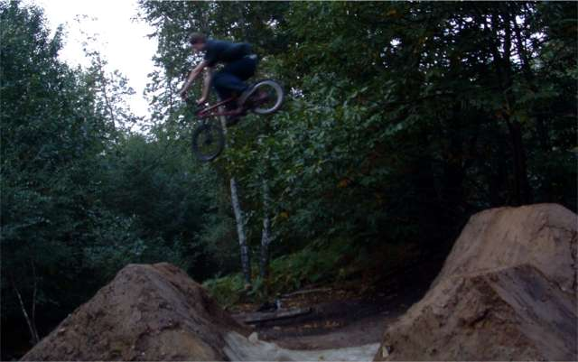
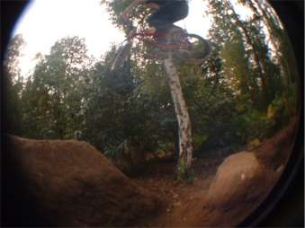
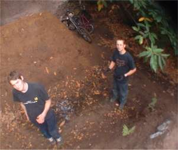
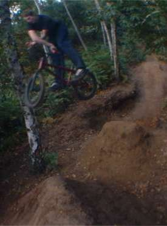
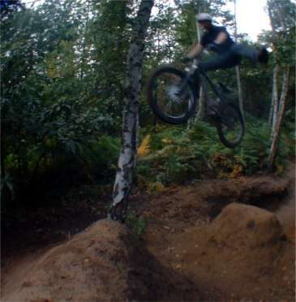
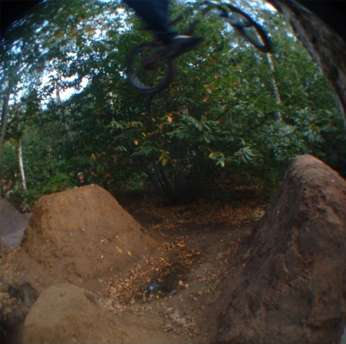
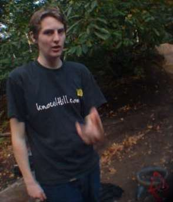
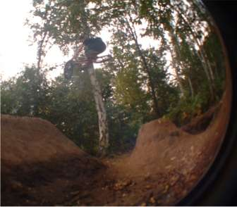
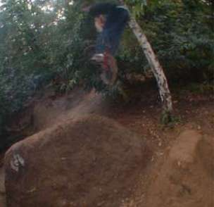
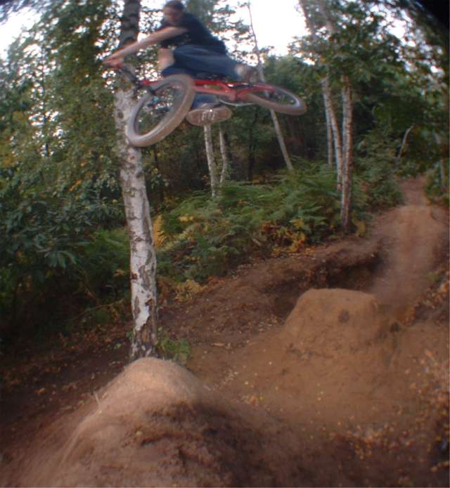

 these are mostly pictures of simon bamber riding the wisley hip. except above he is riding the third. it's big. below is simon and jo(h?)n standing in the gash. i don't know anything about jo(h?)n except that he is from kingston, he rides a 24in bike and he does big no footer. oh and he's a nice guy.     simon 270 xup. very good that is. and one of those big no footers i just told you about. both gash hip.     simon let me use his fisheye and gave me photography tips, so if any of these photos are good its all down to him. he told me where dirt shot from and where smalley shot from. the best photo is probably the one below.  |